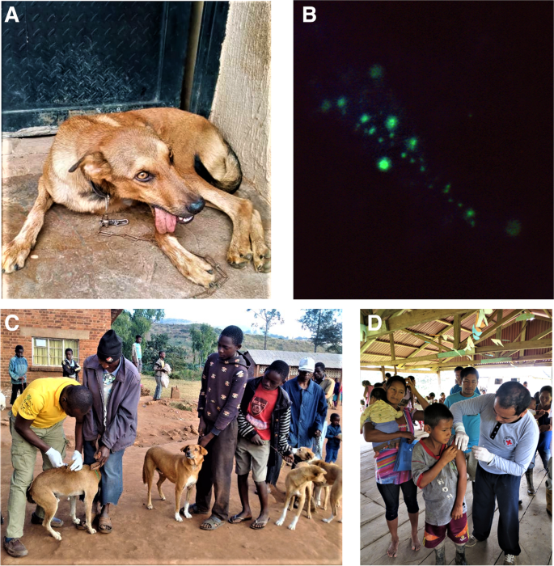
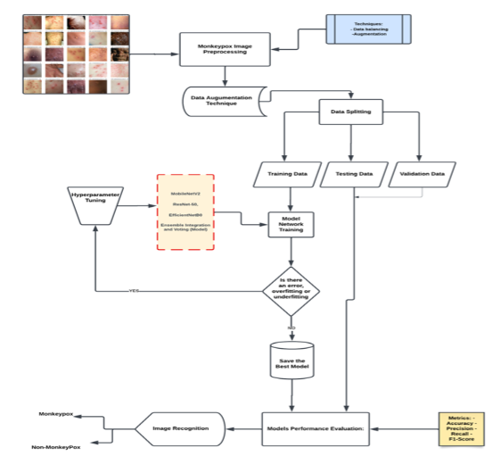
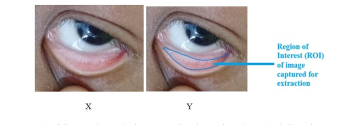
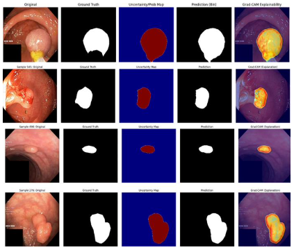
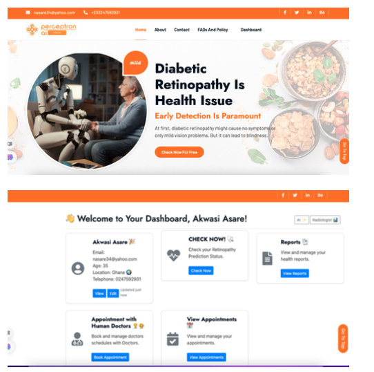
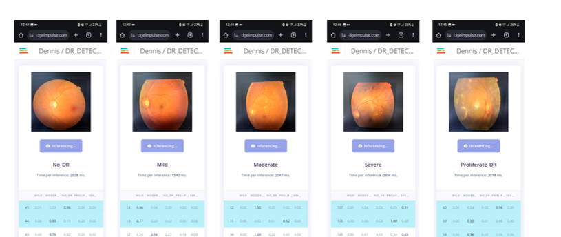
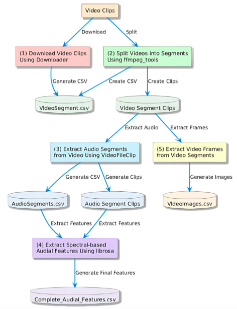

Selected Publications

Performance of Resnet-18 and InceptionResnetv2 in Automated Detection of Diabetic Retinopathy

Machine Learning-Based Prediction of Rabies Outbreaks Using Epidemiological and Environmental Data in Africa

Enhanced Ensemble Model-Based Approach for Monkeypox Detection Using Medical Images

A Hybrid Three-Layer Convolutional Neural Network Architecture for Detecting Anemia in Children Using Palpebral Conjunctiva Images

Improved Segmentation of Polyps and Visual Explainability Analysis




Ndwom: A Multimodal Music Information Retrieval Dataset for Akan Musical Videos